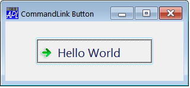
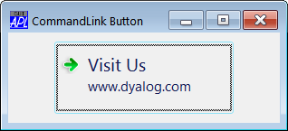
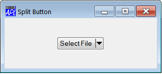

There are two new Styles for the Button Object, namely 'CommandLink' and 'Split'. These apply only to Windows Vista and later and require Native Look and Feel. See Native Look and Feel. Otherwise the use of these Styles will produce a Button with Style 'Push'.
The CommandLink button has an icon displayed to the left of its Caption.
'F'⎕WC'Form' 'CommandLink Button'
F.clb'⎕WC'Button' 'Visit Us'('Style' 'CommandLink') 
In addition to the caption, additional text may be defined by its Note property. If provided, this is displayed below the Caption.
F.clb.Size←80 200 F.clb.Note←'www.dyalog.com'

The Elevated property is a Boolean scalar which when set to 1, changes the icon on the CommandLink button. This is intended to convey to the user that the action associated with the Button requires Elevation, a feature of User Account Control in Windows 7.
F.clb.Elevated←1
The Split Button has a drop-down button, similar to that provided by a Combo object. The user can interact with the Button by clicking it, which generates a Select Event as before, or by clicking the drop-down.which generates a DropDown Event. It is up to the programmer to handle the DropDown Event as appropriate.
'F'⎕WC'Form' 'Split Button'
'F.sb'⎕WC'Button' 'Select File'('Style' 'Split')